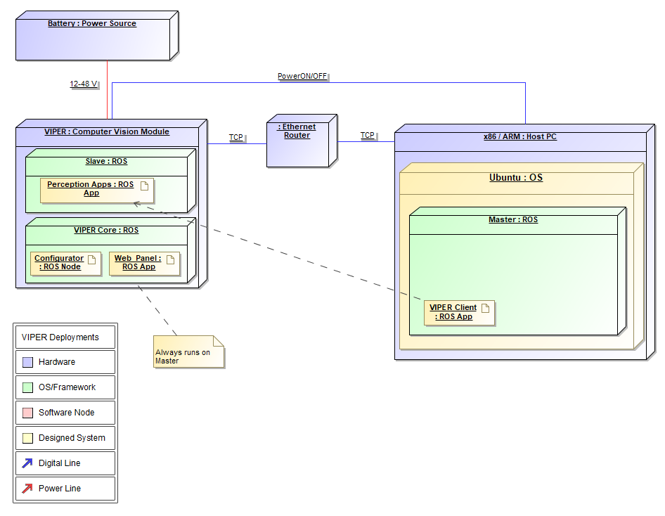
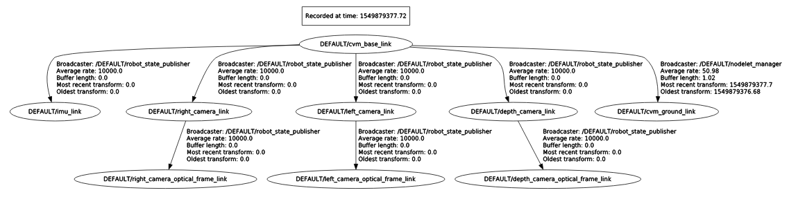

VIPER is based on ROS, therefore it has ROS API that is described by various input and output topics.
Note
All topics are provided without a namespace. When you are using your VIPER, please take its namespace into account.
VIPER architecture
The following topics are available on every VIPER.
No external topics are required.
No services are available for the user.
Internal VIPER transforms, that describe the geometry of our stereo camera.
cvm_ground_link link is used to describe the ground when it is different from VIPER’s center. When this link is configured and set as a target frame for the Obstacle Detector App, the application detects obstacles that are parallel to the ground.
Transform from a robot to the camera base is necessary when VIPER is used together with a robot. It is configurable via cvm_description dynamic parameters.
FollowMe is a VIPER application that tracks bounding box of the given human between frames and provides distance to the target.
If subscribed to, FollowMe status will be published continually. The following are possible:
left/image_rect,
if FollowMe is enabled.true is published to this topic, FollowMe will be enabled, otherwise it will be disabled.follow_me/bounding_boxes. If FollowMe is enabled,
the app will start tracking the selected human.FollowAruco is a VIPER application that tracks Aruco markers and provides distance to the target with a selected ID.
If subscribed to, FollowAruco status will be published continually. The following are possible:
true is published to this topic, FollowAruco will be enabled, otherwise it will be disabled.Obstacle Detector is a VIPER application that imitates laser scan by processing point cloud produced by the camera. Output can be used as an input for a robot path planner.
{kind=link}
{kind=link}
{kind=link}